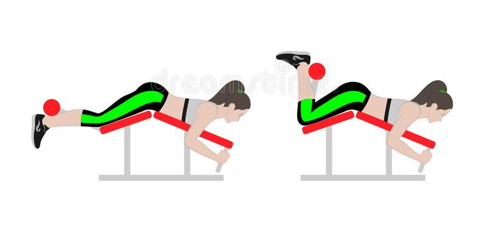

Hamstring curls, also known as leg curls, are isolation exercises that target the hamstring muscles on the backs of your legs. Perform hamstring curls by lying on the floor face-down.
Activate your core and keep your back straight as you bend your knees. Lift your lower legs closer to your glutes and extend them slowly. Continue this movement for the desired amount of repetitions.
You can also perform hamstring curls on a lying leg curl machine.
How to do Machine lying Hamstring Curls properly?
Hamstring curls, also known as leg curls, are isolation exercises that target the hamstring muscles on the backs of your legs. Perform hamstring curls by lying on the floor face-down. Activate your core and
keep your back straight as you bend your knees. Lift your lower legs closer to your glutes and extend them slowly. Continue this movement for the desired amount of repetitions. You can also perform hamstring curls on a lying leg curl machine.
Lie face-down on the leg curl machine with your knees in line with the axis of rotation of the machine.
Place your hands on the handlebars. The padded bar should be just above your ankles. Your spine and pelvis should be in a neutral position. Slightly tuck your pelvis and bring your ribcage down while you engage your core. Maintain a neutral head and neck position.
Your chin should remain tucked throughout the movement, as if you were holding an egg under your chin.
Your legs should be hip-width apart with your knees and ankles in a straight line. Pull your toes slightly toward your knees. Your setup should be comfortable and allow for optimal technique. All repetitions should begin from this position.
Squeeze your hamstrings to begin to bend your legs. Bend your legs until your heels are over your knees. At the top of the movement, squeeze your hamstrings for a beat.
Slowly straighten your knees until your legs are straight without fully extending your knees. Maintain tension on your hamstrings as you lower to the starting position. If your padded bar is adjusted correctly and you're in an optimal position,
the weights should not contact the weight stack during the downward movement.
Pause at the bottom before beginning the next repetition.

5 Hamstring Curl Variations
Once you're familiar with the movement pattern of the hamstring curl, try one of these five variations.
Standing hamstring curl: Practice this beginner-level variation by standing tall with your feet shoulder-width apart. Lift one leg off the ground and lower it before switching sides.
Dumbbell hamstring curl: Perform dumbbell hamstring curls by lying flat on your stomach. While holding a dumbbell between your feet, lift your legs up and over your glutes.
Prone hamstring curl: Perform this variation with the same posture as the dumbbell hamstring curl. Wrap one end of a resistance band to an anchor and the other end to your leg. Slowly lift your leg through a hamstring curl movement.
Stability ball hamstring curl: To practice this variation, lie on your back and place your feet on top of a stability ball with your knees bent. Lift your lower back off the floor and extend your legs, rolling the ball away from your body with each repetition.
Nordic hamstring curl: This advanced variation uses your bodyweight to work your hamstrings. Lie on the floor face-down and place your knees on a padded surface. Hook the back of your heels under a bar, or have a friend or personal trainer hold down your calves.
Tighten your hamstrings and bend your knees to lift your upper body off the floor.
Benefits of Doing Hamstring Curls
Incorporating hamstring curls into your strength-training routine can have several benefits.
Hamstring curls can help you build strong hamstrings. This exercise primarily works the hamstrings, which consists of four muscles: the long head of the biceps femoris, the short head of the biceps femoris, the semimembranosus, and the semitendinosus.
Hamstring curls work muscles throughout your lower body. Hamstring curls activate your glutes, your quadriceps, and your calf muscles (including the gastrocnemius muscle that runs down your leg and the soleus muscle near your Achilles tendon) as secondary muscles during the movement pattern
Hamstring curls are a versatile leg exercise. With several variations, the hamstring curl is a great exercise to incorporate into your home workout routine. Practice hamstring curls as warm-ups for other lower body exercises like the Romanian deadlift and the lunge.
How to Work Out Safely and Avoid Injury
If you have a previous or pre-existing health condition, consult your physician before beginning an exercise program. Proper exercise technique is essential to ensure the safety and effectiveness of an exercise program, but you may need to modify each exercise
to attain optimal results based on your individual needs. Always select a weight that allows you to have full control of your body throughout the movement. When performing any exercise, pay close attention to your body, and stop immediately if you note pain or discomfort.
In order to see continual progress and build body strength, incorporate proper warm-ups, rest, and nutrition into your exercise program. Your results will ultimately be based on your ability to adequately recover from your workouts.
Rest for 24 to 48 hours before training the same muscle groups to allow sufficient recovery.